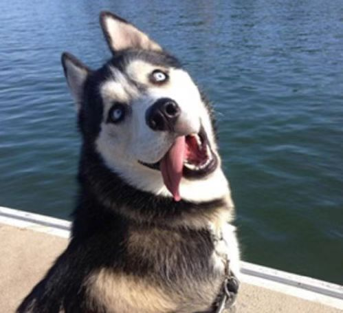

坚信“下雨是因为地太干”，买瓜必挨揍，脑回路盘山公路。

“尊嘟假嘟”挂嘴边，AI换脸喊老公，韭菜届天选之子。
把洗面奶当酸奶喝，问“东北雨姐的苞米地里能挖出iPhone吗”
一男子买瓜时大喊“萨日朗”，并试图用脸接瓜皮，最终荣获年度FQ榜首。
网红直播“雪山救狐”，结果把自己埋雪里，狐狸反手报警，蠢值突破天际。
某大学生坚信雨姐的苞米地能挖出“上古AI神器”，挖了三天三夜。
为抢“遥遥领先”手机，把自家猫抵押给黄牛，最终猫反手当了网红。